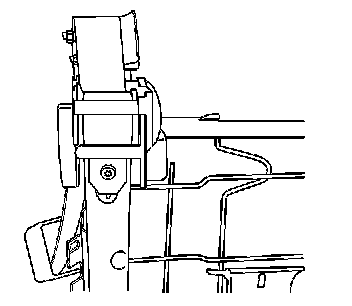

Front Seat Belt Replacement
Front Seat Belt Replacement
Removal Procedure
Caution: Refer to SIR Caution (SIR Caution) .
1. Remove the front seat back trim cover. Refer to Bucket Seat Replacement (Bucket Seat Replacement) .
2. Remove the front seat cover and pad. Refer to Front Seat Back Cushion Cover and Cushion Pad Replacement (Front Seat Back Cushion Cover and Cushion Pad Replacement) .
3. Remove the screws retaining the roller assembly cover and remove the cover.

4. Remove the bolt retaining the seat belt retractor to the seat frame.

5. Remove the seat belt lower retaining nut (2).
6. Remove the seat belt retractor assembly.
Installation Procedure
1. Ensure that the seat belt is not twisted before installing the retractor.
2. Install the seat belt (2) to the mounting stud.
Ensure that the anti-rotation tab on the seat belt is located properly in the seat frame before tightening the retaining nut.
Notice: Refer to Fastener Notice (Fastener Notice) .
3. Install the retaining nut.
Tighten the nut to 42 N.m (31 lb ft).
4. Position the seat belt over the roller assembly.
Ensure that the seat belt is not twisted.
5. Install the seat belt retractor.
Ensure that the anti-rotation tab on the seat belt retractor is located properly on the seat frame before tightening the retractor fastener.
6. Install the retaining bolt.
Tighten the bolt to 26 N.m (19 lb ft).
7. Install the roller assembly cover.
8. Install the roller assembly screws.
Tighten the fasteners to 5 N.m (44 lb in).
9. Ensure proper operation of the seat belt retractor.
10. Install the seat back cover. Refer to Front Seat Back Cushion Cover and Cushion Pad Replacement (Front Seat Back Cushion Cover and Cushion Pad Replacement) .
11. Install the front seat. Refer to Bucket Seat Replacement (Bucket Seat Replacement) .
12. Confirm proper operation of the seat belt retractors.